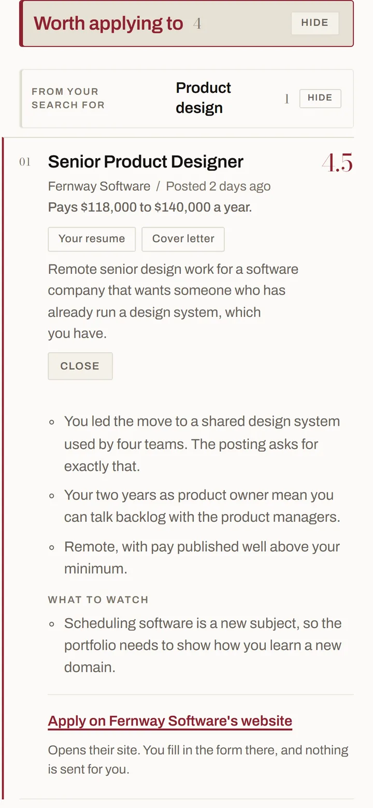

§01 The idea
Jobs that fit who you are, not just your job title.
Good Report reads thousands of job postings against you and hands back the few worth applying to, each with one plain reason why.
See how it worksFive job postings, read against one designer's wishes. Four are struck out: an office in New York, two levels above their last title, pay too low, closed. One is kept: a remote senior product design job, scored 4.5 out of 5.
§02 The numbers
Three weeks for one designer
9,106job postings in three weeks
41worth your time
§03 How it works
We get to know you. Then we get to work.
It starts with a few questions, on a call, a video chat or by email, whichever suits you: the work you’ve done, what you’re good at, the pay you need, where and when you’ll work, and anything you never want to do again. That becomes your criteria, and every job gets read against it.
- 1
We redo your resume
Rebuilt to read well to people and to the software employers use to sort applications. Every line true.
- 2
We help you pivot, if you want
Ready for a different field? We show you which directions your experience really reaches, and write a resume for each one.
- 3
We search on your schedule
Every week or every month, new postings read against your criteria. When a job scores 4 out of 5 or better, you get a custom resume, cover letter and interview guide for it.
You apply, in your own name. We never send anything for you. Start with a conversation
§04 Your report
What your report looks like
- 1
A score out of five for how well each job fits you.
- 2
One plain reason why, and what to watch out for.
- 3
A custom resume, cover letter and interview guide for every job that scores 4 or better. You send them yourself.

§05 Try it
Try one search
Pick a person. They’re made up; the way their jobs get read is real.
0
found
0
read closely
0
worth it
§06 In their words
What people say
Amazing. It found roles I never once saw on LinkedIn.
It saved me from searching and searching just to find one or two good roles.
§07 Sign up
Want your own good report?
Leave your name and email. A real person writes back to set up your first conversation.
One flat fee, never tied to getting hired.